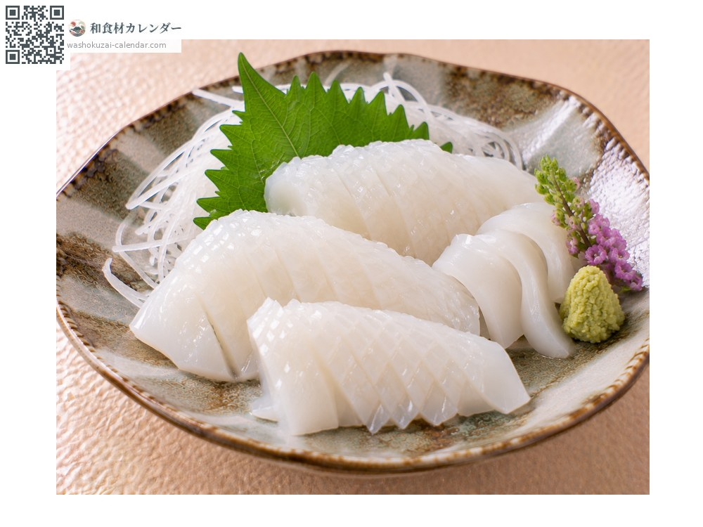
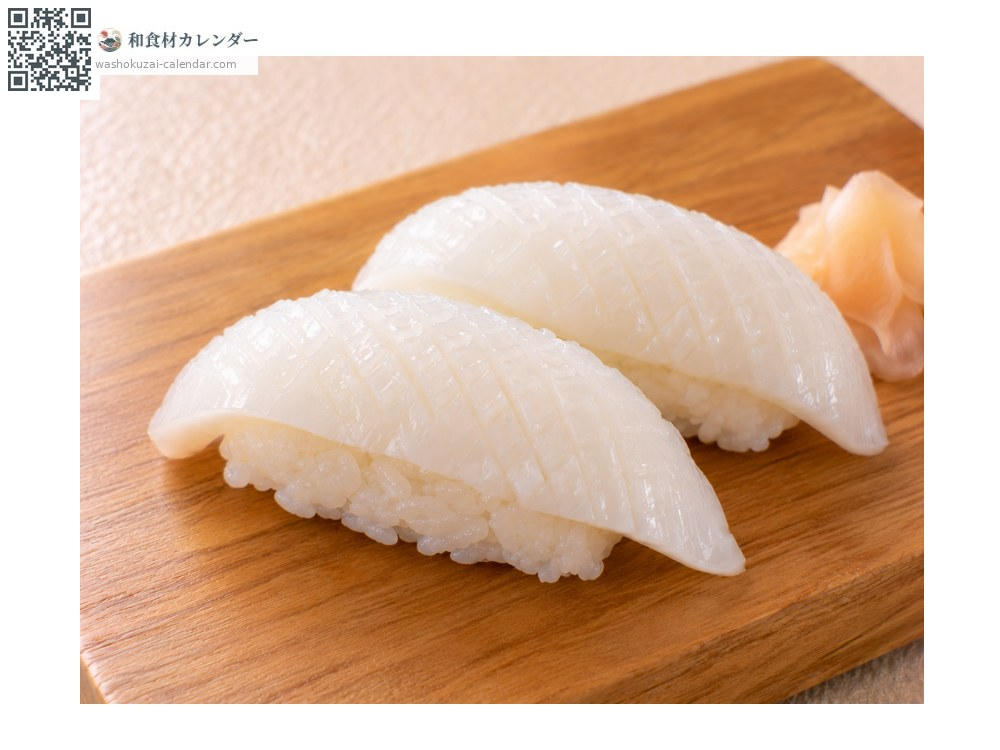
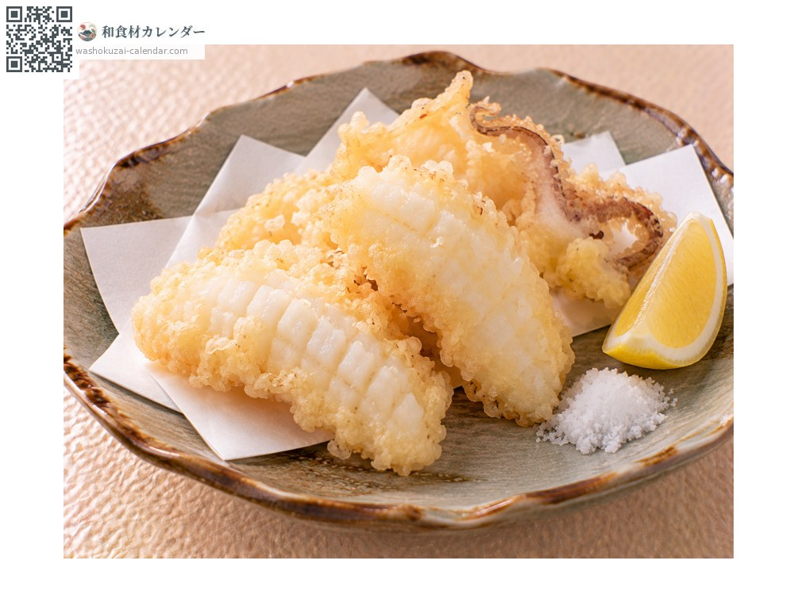
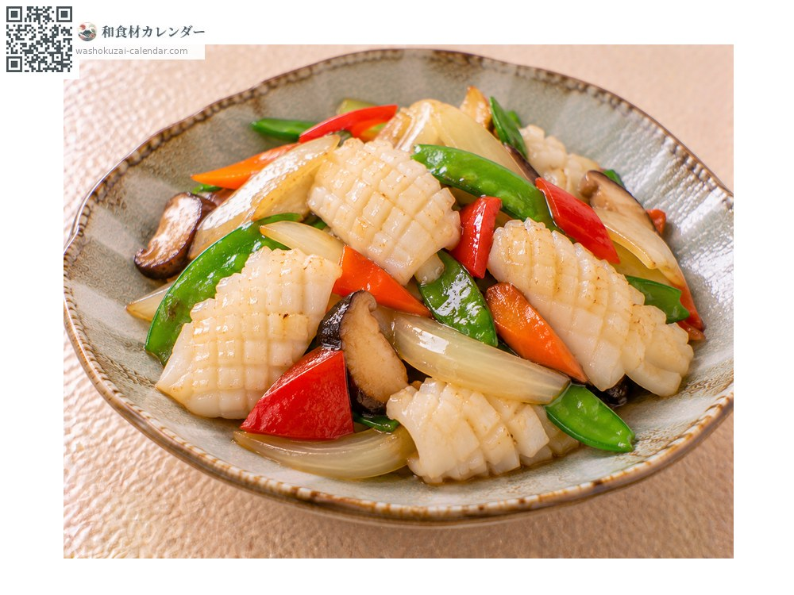

海鲜
虎斑乌贼（纹甲）
紋甲イカ もんごういか
应季时期为1月、2月、11月、12月

应季时期
1月
2月
3月
4月
5月
6月
7月
8月
9月
10月
11月
12月
应季有供应
烹饪方法

生鱼片
切厚片，口感弹牙且甜味浓郁。

寿司
作为握寿司的配料，划上刀纹会更好入口。

天妇罗
裹衣油炸，成品柔嫩。

热炒
迅速拌炒，加热过久会变硬。
挑选方法
肉质厚实、带有通透感。内壳没有破裂。
保存方法
取出内壳与内脏后冷藏。生食用当天食用。也能冷冻。
主要产地
小知识
正式名称为雷乌贼，因为背上有如闪电般的花纹而得名。属于墨鱼家族，肉厚且加热后也不易变硬。日本市场上，进口的欧洲墨鱼同样以纹甲之名流通。